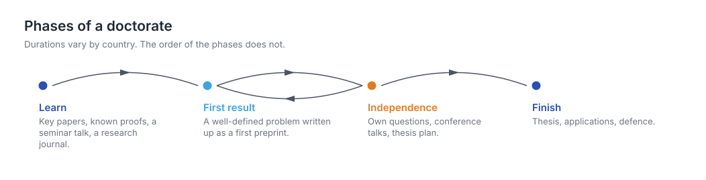

Guides · Method
Managing your PhD
A year-by-year plan for the doctorate, how to work with your supervisor, keep a research journal, handle being stuck, protect your health, and finish on time.
Path · Starting your PhD · step 1 of 6
Next in this path: What a PhD expects from you →
A PhD is a long project with uncertain steps. You are learning to do independent research while producing results. Planning cannot remove the uncertainty, but it can make the path clearer.
A typical timeline#
Durations vary by country: about three years in France and the United Kingdom, three to four years in much of Europe, five to six in the United States and Canada (including coursework). Adapt the plan below to your programme.
- First phase: learn. Read the key papers and books of the area. Reproduce known proofs. Give a talk on a paper in the group seminar. Start a research journal.
- Second phase: first result. Work on a well-defined first problem with your supervisor. Write it up as a first paper or preprint, even if it is modest.
- Third phase: independence. Develop your own questions. Present at conferences. Start thinking about the thesis structure and postdoc applications.
- Final phase: finish. Write the thesis, apply for positions, prepare the defence.
Working with your supervisor#
- Regular meetings: agree on a rhythm (weekly or fortnightly) and keep it, even when you have little progress. Saying "I am stuck on this lemma" is useful information.
- Prepare each meeting: a short list of what you did, what you are stuck on, and what you want to ask.
- Write notes after meetings: what was decided, what to read, what to try.
- Show written work early: a page of notes is easier to discuss than an idea in your head.
- Ask about expectations: how many papers before the defence, when to start writing, when to apply for postdocs.
Keep a research journal#
Write every day, even a few lines: what you tried, what failed, what you read, what questions you have. The journal is your memory, your source of material for the thesis, and a record of progress on bad days.
When you are stuck#
Being stuck is the normal state of research. Some strategies:
- Work out more examples, especially small or degenerate cases.
- Weaken the question: prove a special case first.
- Strengthen the hypothesis: what extra assumption makes it work?
- Explain the problem aloud to someone else.
- Read a related paper with a fresh method.
- Change problems for a few days, then come back.
- Talk to your supervisor before weeks pass.
Productivity#
- Protect a block of deep work every day, without email and messages.
- Write every day.
- Separate learning time, research time and writing time.
- Keep a simple list of tasks for the week.
- Say no to some extra commitments, especially in the final year.
Health and support#
A PhD can be isolating. Keep a life outside research: sport, friends, rest. Talk to other doctoral students. Most universities offer counselling services and doctoral schools have contacts for difficulties with supervision. Asking for help early is a sign of professionalism.
Teaching and other duties#
Teaching is valuable experience and often required for future positions. Keep it within the limits of your contract and plan your research time around it.
Checklist#
- I have a rough plan for each phase of my PhD.
- I meet my supervisor regularly and prepare each meeting.
- I keep a research journal every day.
- I have strategies for when I am stuck.
- I protect time for deep work and for rest.
Discussion
Questions, corrections and your own experience are welcome. Comments live in the forum, on GitHub Discussions, with Markdown and LaTeX.